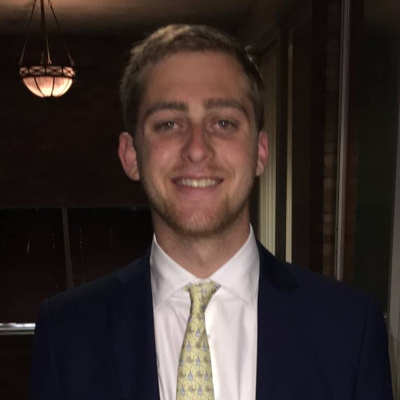
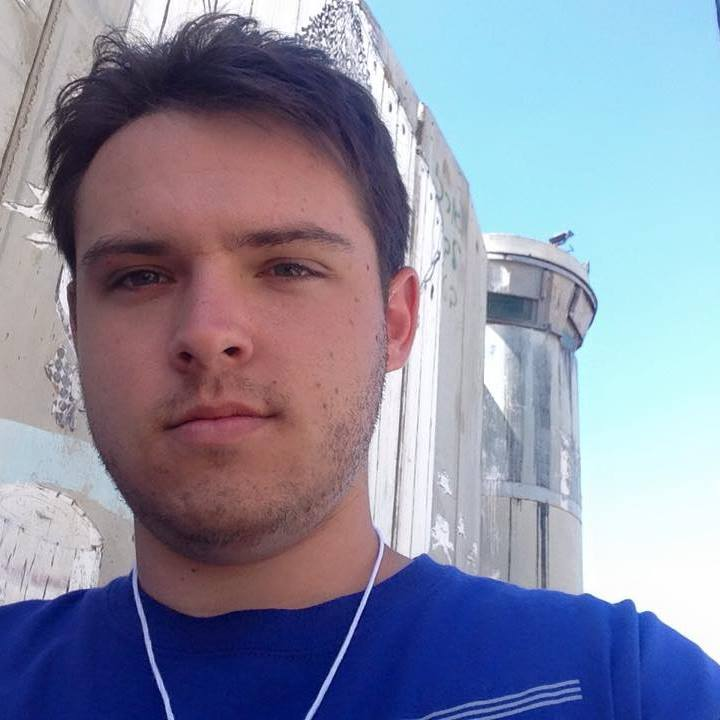

EZstack
Modern data intensive software stacks consist of much more than a relational database. EZStack represents a new, innovative way to think about data denormalization. The goal of the project is to provide a highly scalable, highly efficient, eventually consistent data stack. This product is designed to benefit big-data companies in achieving an efficient, highly scalable data processing system with a simple interface, thus eliminating engineering difficulties within the data model. While most other big data stacks attempt to tackle these problems by investing large amounts of resources in developing their own custom solutions that are highly specific to their case, EZStack will attempt to provide a general solution that is applicable to many different use-cases, favoring ease-of-use and customization.
Ben Devore
Bio: Ben Devore is a Computer Science major and a Political Science minor. He worked as an intern at Bazaarvoice in Austin, TX for most of the past 2 years, and will be joining the company full time after his graduation in Spring 2018. He will be working on the Data Infrastructure Team, helping them solve big data problems at petabyte scale. Previously, Ben worked in the finance department of several successful political campaigns, and he still maintains avid interest in the field of campaign finance.
Ben hopes that EZstack will inspire new ways of thinking about scaling databases.
Beshoi Genidy

Bio: Beshoi Genidy is majoring in Computer Science with a second major in Computer Engineering. He has worked as a Software Engineer in the industry since 2014. Upon graduation he will be joining Microsoft's Cloud and Infrastructure team to work on internal applications.
In his spare time, Beshoi enjoys running and playing soccer.
Sam Given
Bio: Sam Given is a Computer Science major, who is also pursuing a Pre-Law non-technical track. He has worked for the media company and virtual reality studio Emblematic Group for the past two years, and will be working for them upon graduation from the George Washington University in 2018. Previously, Sam has worked as an assistant teacher at an Elementary school program sponsored by the "I have a Dream" Foundation, helping teach both Math and English to underpriveledged students between third and fifth grade.
In his spare time, Sam is an avid sports fan of all teams from Los Angeles, with a particular fondness for baseball analytics and the Dodgers.
Our Repo:
Documentation:
Our Presentation: